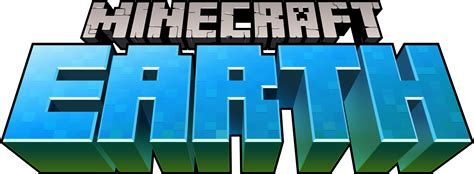

El desafortunado desceso de Minecraft earth

Es indiscutible que Mojang, con Minecraft Earth, ha tenido muy mala suerte. Y es que su gran apuesta para 2020 era un juego que se basaba, principalmente, en recorrer las calles e interactuar con otros jugadores. Una fórmula que funcionó muy bien con Pokemon Go, y antes aún con Ingress, pero que en un 2020 en el que, por culpa del coronavirus, hemos tenido que pasar encerrados en casa varios meses y nos ha tocado reducir al mínimo las relaciones interpersonales, estaba condenada al fracaso.
Así, y como es más que comprensible (y también una gran pena, hay que decirlo), Mojang ha anunciado mediante un tweet que Minecraft Earth tiene los días contados, el 30 de junio será el último día que se podrá jugar a la propuesta de realidad aumentada del juego de los bloques. A partir del 1 de julio, se borrarán datos y se cerrarán servidores, por lo que ya no será posible acceder al juego ni a los elementos que los jugadores tienen en el mismo.
La situación, obviamente, también ha afectado a otros juegos basados en la realidad aumentada, razón por la que Niantic, responsable precisamente de Pokemon Go e Ingress, ha realizado modificaciones en sus juegos con el fin de que tengan más opciones de jugabilidad desde casa. En el caso de Minecraft Earth, Mojang también introdujo algunos cambios a ese respecto, pero como el juego todavía no estaba consolidado, ha resultado no ser suficiente.
Mojang ha decidido, eso sí, que la despedida de Minecraft Earth sea lo menos traumática posible, y que quienes lo juegan puedan tener una buena despedida (de seis meses) del mismo.